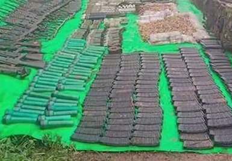
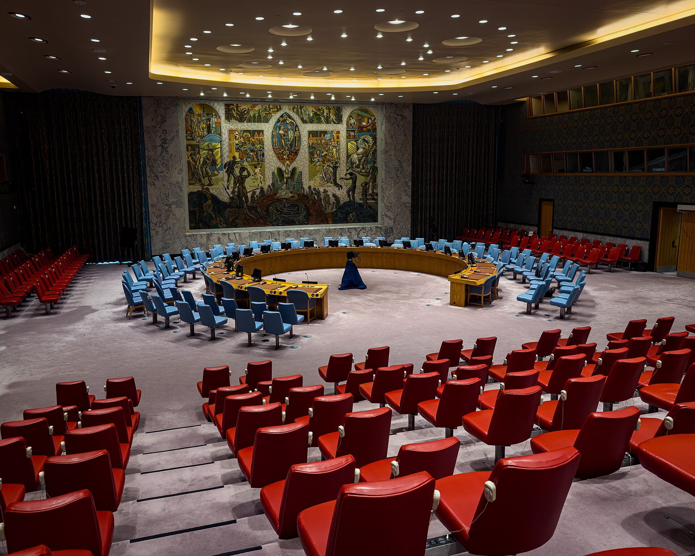

နောက်ဆုံး စာသတင်း
NOV 26 · ၃ ကဏ္ဍအာရက္ခ

အန်း-မင်းတုန်း တောင်ကြားမှာ AA က စခန်းငယ် သိမ်း၊ တိုက်ပွဲပြင်းထန် — တလယ်တောင်ကြားလမ်းမှာ AA က စစ်တပ်ရှေ့တန်းစခန်းငယ်ကို သိမ်းပြီး လက်နက်ခဲယမ်းတွေ ရခဲ့ပါတယ်။ စစ်တပ်က တပ်သား ၁,၀၀၀ ကျော်နဲ့ လေကြောင်းတိုက်ခိုက်နေပါတယ်။ ပုဏ္ဏားကျွန်း ဗုံးကြဲမှုမှာ သေဆုံးသူ ၂ ဦး၊ ဒဏ်ရာရသူ ၁ ဦးလို့ ပြင်ဆင်အတည်ပြုထားပါတယ်။
မြန်မာ

ICJ အမိန့်အားလုံးကို လိုက်နာမှာ မဟုတ်ဘူးလို့ စစ်ခေါင်းဆောင် ပြော — မူဆလင်တွေအပေါ် ကျူးလွန်မှုနဲ့ ပတ်သက်တဲ့ ICJ စီရင်ချက်ကို မင်းအောင်လှိုင်က ပယ်ချပြီး အမိန့်အားလုံးကို လိုက်နာမှာ မဟုတ်ဘူးလို့ ပြောပါတယ်။ ကုလ လုံခြုံရေးကောင်စီမှာလည်း ဒီအရေးကို ဆွေးနွေးနေပါတယ်။
ကမ္ဘာ
ရီယာဒ် မျှော်စင်ကို ဟူသီ ဒရုန်း ဒုတိယအကြိမ် တိုက်၊ ၁၁ ဦး ဒဏ်ရာရ — ဆော်ဒီ ရေနံချက်စက်ရုံကိုလည်း တိုက်ခိုက်ခဲ့တယ်လို့ ဟူသီတို့ ပြောပြီး ရေနံဈေး တက်လာပါတယ်။ အမေရိကန်မှာ Huawei ကို အမှု ၁၀ မှုနဲ့ အပြစ်ရှိ စီရင်ခဲ့ပြီး ကုန်သွယ်ဖက် ၁၄ နိုင်ငံအပေါ် အခွန်သစ် အဆိုပြုထားပါတယ်။